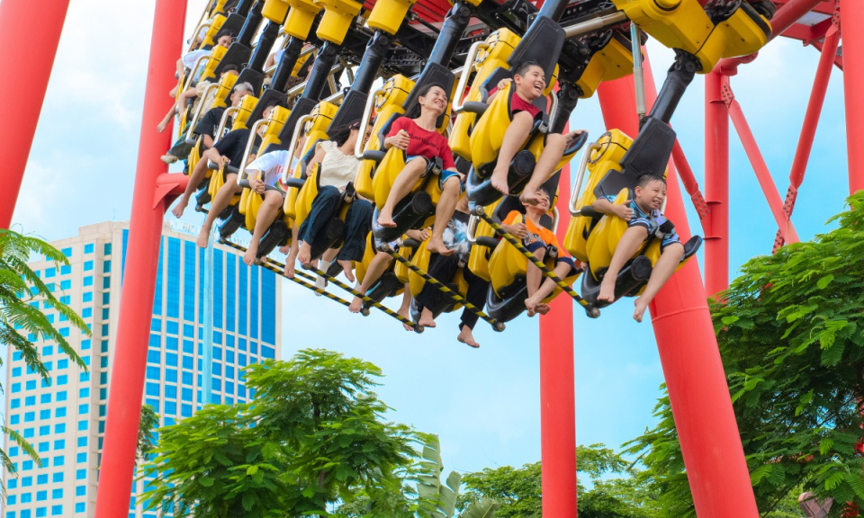

Vẻ đẹp thiên nhiên
Những năm gần đây, Bãi Cháy đã trở thành trung tâm du lịch sôi động của thành phố Hạ Long. Các hoạt động kinh tế đêm được đầu tư mạnh mẽ nhằm kéo dài thời gian lưu trú của du khách và tạo thêm nhiều trải nghiệm hấp dẫn.
Từ các tuyến phố đi bộ, chợ đêm, khu ẩm thực ven biển đến những chương trình biểu diễn nghệ thuật đặc sắc, du khách có thể dễ dàng tìm thấy nhiều hoạt động giải trí sau khi mặt trời lặn.
Nhiều tuyến phố được chỉnh trang với hệ thống đèn chiếu sáng, cảnh quan hiện đại và các khu vui chơi hoạt động xuyên đêm. Điều này góp phần tạo nên diện mạo mới cho Bãi Cháy.

Việc phát triển kinh tế đêm giúp tăng doanh thu dịch vụ, tạo việc làm cho người dân địa phương và nâng cao sức hấp dẫn của Quảng Ninh trên bản đồ du lịch Việt Nam.
← Quay lại Tin tức